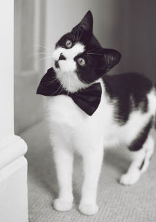

Cat
Cats purr at a frequncy that cures their fractured bones and helps them feel better.
- Scientific name: Felis Catus
- Average size: Up to 46 cm.
- Average Life Span: 4-5 years.
- Habitat: All over the world.
The domestic cat (Felis silvestris catus or Felis catus) is a small, typically furry, carnivorous mammal. They are often called house cats when kept as indoor pets or simply cats when there is no need to distinguish them from other felids and felines.